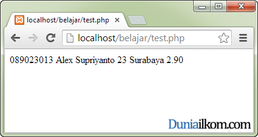
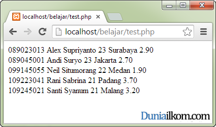

Setelah menjalankan fungsi mysql_connect() untuk membuat koneksi antara PHP dengan MySQL, dan menjalankan query MySQL dengan fungsi mysql_query(), pada tutorial kali ini kita akan membahas tentang fungsi mysql_fetch_row() yang digunakan untuk menampilkan tabel hasil query MySQL tersebut.
Perintah SELECT adalah query MySQL yang paling sering gunakan. Query ini berfungsi untuk menampilkan data dari database. Data yang ditampilkan MySQL biasanya diberikan dalam bentuk tabel yang terdiri dari baris dan kolom.
Untuk menampilkan data MySQL di dalam PHP, hasil dari fungsi mysql_query() harus diproses lebih lanjut agar bisa ditampilkan di dalam web browser. PHP menyediakan banyak cara untuk menampilkan hasil query MySQL. Salah satunya akan kita bahas dalam tutorial kali ini dengan fungsi: mysql_fetch_row().
Fungsi mysql_fetch_row() digunakan untuk menampilkan tabel secara baris per baris. Fungsi mysql_fecth_row() akan mengembalikan nilai 1 baris dari sebuah tabel pada setiap pemanggilan. Sehingga untuk dapat menampilkan seluruh isi tabel, fungsi mysql_fecth_row() harus dipanggil secara berulang.
Berikut adalah format dasar penulisan fungsi mysql_fetch_row() dalam PHP
$row = mysql_fetch_row($result) |
Cara pengambilan data dari variabel $row, penting untuk dipahami.
Variabel $row hasil fungsi mysql_fetch_row() bertipe array. Jika sebuah baris di dalam tabel MySQL terdiri dari 3 kolom, maka varibel $row akan berisi nilai sebagai berikut: $row[0]=nilai_kolom_1, $row[1]=nilai_kolom_2, dan $row[2]=nilai_kolom_3. Index array dimulai dari 0, dan karena itu kolom 1 berada pada index 0, bukan index 1.
Yang perlu menjadi perhatian, fungsi mysql_fetch_row() hanya membaca 1 baris pada sekali pemanggilan. Jika tabel kita terdiri dari 5 baris, maka fungsi mysql_fecth_row() harus diulang sebanyak 5 kali.
Agar lebih mudah memahami cara kerja fungsi mysql_fetch_row(), kita akan langsung praktek dengan kode program.
Karena fungsi mysql_fetch_row() digunakan untuk menampilkan data, kita harus membuat datanya terlebih dahulu, yaitu berupa database MySQL beserta tabelnya.
Sebagai data contoh dan sarana latihan menggunakan query MySQL, saya akan membuat database universitas, dan tabel mahasiswa_ilkom. Database universitas dan tabel mahasiswa_ilkom ini akan saya gunakan pada tutorial PHP MySQL selanjutnya.
Berikut adalah kode yang diperlukan:
1
2
3
4
5
6
7
8
9
10
11
12
13
14
15
16
17
18
19
20
21
22
23
24
25
26
27
28
29
30
31
32
33
34
35
36
37
38
39
40
41
42
43
44
45
46
47
48
49
50
51
52
53
54
55
56 |
<?php//buat koneksi dengan MySQL$link=mysql_connect('localhost','root',''); //jika koneksi gagal, langsung keluar dari PHPif (!$link){ die("Koneksi dengan MySQL gagal");} //buat database universitas$result=mysql_query('CREATE DATABASE universitas');if (!$result){ die("Database mahasiswa gagal dibuat");} //gunakan database universitas$result=mysql_query('USE universitas');if (!$result){ die("Database mahasiswa gagal digunakan");} //buat tabel mahasiswa_ilkom$query= "CREATE TABLE mahasiswa_ilkom (nim CHAR(9) NOT NULL PRIMARY KEY, nama CHAR(50), umur INT, tempat_lahir CHAR(50), IPK DECIMAL (3,2))";$result=mysql_query($query);if (!$result){ die("Tabel mahasiswa_ilkom gagal dibuat");} //tambahkan data ke dalam tabel mahasiswa_ilkom$query="INSERT INTO mahasiswa_ilkom VALUES ('089045001', 'Andi Suryo',23, 'Jakarta', 2.7)";mysql_query($query); $query="INSERT INTO mahasiswa_ilkom VALUES ('109245021', 'Santi Syanum',21, 'Malang', 3.2)";mysql_query($query); $query="INSERT INTO mahasiswa_ilkom VALUES ('099145055', 'Neil Situmorang',22, 'Medan', 1.9)";mysql_query($query); $query="INSERT INTO mahasiswa_ilkom VALUES ('089023013', 'Alex Supriyanto',23, 'Surabaya', 2.9)";mysql_query($query); $query="INSERT INTO mahasiswa_ilkom VALUES ('109223041', 'Rani Sabrina',21, 'Padang',3.7)";mysql_query($query); echo "Database universitas dan Tabel mahasiswa_ilkom berhasil dibuat";?> |
Kode PHP diatas sedikit panjang jika dibandingkan contoh-contoh kita sebelumnya, namun intinya perintah diatas adalah untuk membuat database universitas, dan tabel mahasiswa_ilkom. Setelah tabel terbentuk, kemudian saya menambahkan beberapa data kedalam tabel tersebut.
Dari contoh diatas, anda juga dapat melihat cara pembuatan database, pembuatan tabel, dan cara memasukkan nilai kedalam database. Semuanya dijalankan dengan fungsi mysql_query().
Jika anda sudah paham tentang query MySQL, perintah query diatas tentunya tidak terlalu sulit untuk dipahami. Namun jika ragu tentang instruksi query yang saya gunakan, anda bisa mempelajarinya di tutorial MySQL duniailkom.
Fungsi-fungsi PHP yang saya gunakan juga telah kita pelajari pada tutorial sebelumnya. Tambahan baru mungkin ada pada penggunaan logika IF untuk menangani fungsi yang gagal. Saya menggunakan instruksi (!$result) untuk masuk pada fungsi die() jika fungsi tersebut gagal dijalankan.
Sebagai contoh, jika anda menjalankan kode diatas sebanyak 2 kali, maka akan tampil pesan ‘Database mahasiswa gagal dibuat’. Hal ini terjadi karena terdapat duplikasi database di dalam MySQL, sehingga kode PHP akan berhenti pada baris ke 15 karena fungsi die().
Setelah tabel contoh selesai dibuat, saatnya kita mencoba menampilkan data dari tabel mahasiswa_ilkom dengan fungsi mysql_fetch_row().
Cara paling dasar untuk menampilkan data dari mysql adalah seperti kode program berikut ini:
1
2
3
4
5
6
7
8
9
10
11
12
13
14
15
16
17
18
19
20
21
22 |
<?php//buat koneksi dengan MySQL$link=mysql_connect('localhost','root',''); //jika koneksi gagal, langsung keluar dari PHPif (!$link){ die("Koneksi dengan MySQL gagal");} //gunakan database universitas$result=mysql_query('USE universitas');if (!$result){ die("Database mahasiswa gagal digunakan");} //tampilkan tabel mahasiswa_ilkom$result=mysql_query('SELECT * FROM mahasiswa_ilkom');$row=mysql_fetch_row($result);echo "$row[0] $row[1] $row[2] $row[3] $row[4]";?> |
Kode program dari baris 1 sampai baris 16 merupakan persiapan untuk mengkoneksikan MySQL dan memilih database universitas.
Perhatikan pada baris ke 12, dimana saya menjalankan query “USE universitas”. Query ini ditujukan untuk memberitahu MySQL bahwa kita akan menggunakan database mahasiswa. Alternatif penulisan mysql_query(‘USE universitas’) adalah dengan menggunakan fungsi mysql_select_db(‘universitas’). Anda bebas ingin menggunakan salah satunya.
Pada baris ke-20 saya menjalankan query SELECT untuk menampilkan seluruh isi tabel mahasiswa_ilkom. Cara menjalankannya adalah dengan fungsi mysql_query() dengan perintah query: ‘SELECT * FROM mahasiswa_ilkom’. Hasil fungsi ditampung kedalam variabel $result.
Variabel $result selanjutnya diproses dengan fungsi mysql_fetch_row($result), dan disimpan dalam variabel $row.
Seperti yang telah kita pelajari, bahwa fungsi mysql_fetch_row() akan menyimpan hasil query sebagai array dengan key adalah urutan kolom mulai dari key ke-0 untuk kolom ke-1 tabel, $row[1] untuk kolom ke-2, dan begitu seterusnya. Karena tabel mahasiswa_ilkom hanya memiliki 5 kolom, maka $row[4] adalah kolom terakhir.
Sesuai namanya, fungsi mysql_fetch_row() hanya akan menampilkan baris perbaris, jadi bagaimana caranya untuk menampilkan seluruh tabel mahasiswa_ilkom? Caranya adalah dengan mengulang fungsi mysql_fetch_row() sebanyak jumlah baris yang ingin ditampilkan.
Sehingga contoh program kita menjadi sebagai berikut:
1
2
3
4
5
6
7
8
9
10
11
12
13
14
15
16
17
18
19
20
21
22
23
24
25
26
27
28
29 |
<?php//buat koneksi dengan MySQL$link=mysql_connect('localhost','root',''); //gunakan database universitas$result=mysql_query('USE universitas'); //tampilkan tabel mahasiswa_ilkom$result=mysql_query('SELECT * FROM mahasiswa_ilkom');$row=mysql_fetch_row($result);echo "$row[0] $row[1] $row[2] $row[3] $row[4]";echo "<br />";$row=mysql_fetch_row($result);echo "$row[0] $row[1] $row[2] $row[3] $row[4]";echo "<br />";$row=mysql_fetch_row($result);echo "$row[0] $row[1] $row[2] $row[3] $row[4]";echo "<br />";$row=mysql_fetch_row($result);echo "$row[0] $row[1] $row[2] $row[3] $row[4]";echo "<br />";$row=mysql_fetch_row($result);echo "$row[0] $row[1] $row[2] $row[3] $row[4]";?> |

Pada contoh diatas, saya menghapus baris fungsi die() semata-mata agar contoh program kita tidak terlalu panjang.
Kode program diatas berjalan sebagaimana dengan seharusnya, karena pada setiap pemanggilan fungsi mysql_fetch_row(), PHP akan ‘menggeser’ penunjuk baris MySQL ke baris berikutnya di dalam tabel. Sehingga untuk pemanggilan mysql_fetch_row() ke-2 posisi pointer MySQL akan berada dibaris ke-2 dari tabel, dan begitu seterusnya hingga pemanggilan mysql_fetch_row() ke-5.
Namun jika anda perhatikan, fungsi mysql_fetch_row() yang ditulis secara berulang-ulang pada contoh sebelumnya merupakan pekerjaan yang cocok untuk fungsi perulangan. Sehingga dengan menggunakan perulangan for, kode kita akan menjadi lebih mudah ditulis.
1
2
3
4
5
6
7
8
9
10
11
12
13
14
15
16 |
<?php//buat koneksi dengan MySQL$link=mysql_connect('localhost','root',''); //gunakan database universitas$result=mysql_query('USE universitas');//tampilkan tabel mahasiswa_ilkom$result=mysql_query('SELECT * FROM mahasiswa_ilkom');for ($i=1;$i<=5;$i++){ $row=mysql_fetch_row($result); echo "$row[0] $row[1] $row[2] $row[3] $row[4]"; echo "<br />";}?> |
Fungsi diatas akan menampilkan seluruh baris yang ada di dalam tabel mahasiswa_ilkom denganmelakukan perulangan fungsi mysql_fetch_row() sebanyak 5 kali.
Namun masih ada 1 hal lagi yang bisa kita perbaiki dari program diatas.
Perulangan for mengharuskan kita untuk menulis langsung jumlah perulangan yang harus dilakukan. Pada saat penulisan program, kita telah mengetahui bahwa tabel mahasiswa_ilkom berisi 5 baris, Namun bagaimana jika ternyata data di dalam tabel saat ini tidak lagi 5, tetapi sudah lebih dari itu?
Untuk perulangan dimana banyaknya perulangan tidak diketahui pada saat penulisan program, kita bisa beralih ke perulangan while (Tutorial Cara Penulisan Perulangan While dalam PHP).
Untuk membuat hal ini menjadi lebih mudah, fungsi mysql_fetch_row() akan mengembalikan nilai FALSE jika pointer telah berada di baris terakhir tabel MySQL. Nilai kembalian ini menjadi variabel yang tepat untuk ‘kondisi berhenti’ pada perulangan while.
Berikut adalah contoh program penggunaan mysql_fetch_row () dengan perulangan while:
1
2
3
4
5
6
7
8
9
10
11
12
13
14
15 |
<?php//buat koneksi dengan MySQL$link=mysql_connect('localhost','root',''); //gunakan database universitas$result=mysql_query('USE universitas');//tampilkan tabel mahasiswa_ilkom$result=mysql_query('SELECT * FROM mahasiswa_ilkom');while ($row=mysql_fetch_row($result)){ echo "$row[0] $row[1] $row[2] $row[3] $row[4]"; echo "<br />";}?> |
Konsep perulangan while seperti diatas akan sering anda lihat untuk menampilkan data dari database MySQL.
Selain menggunakan fungsi mysql_fetch_row(), PHP masih memiliki fungsi lainnya untuk menampilkan data tabel dari MySQL, salah satunya adalah fungsi mysql_fecth_array().
Fungsi mysql_fecth_array() lebih fleksibel karena kita tidak hanya bisa menggunakan angka, namun juga ‘nama’ kolom sebagai key array. Pembahasan tentang fungsi mysql_fecth_array() akan kita pelajari dalam tutorial selanjutnya: Cara Menampilkan Tabel MySQL dari PHP (mysql_fetch_array().
Sumber : http://www.duniailkom.com/tutorial-php-mysql-cara-menampilkan-tabel-mysql-dari-php-mysql_fetch_row/